Visual match · 1 of 17
Same pose, hands, pyramid and background visitors.


Open source file
Claimant: Hassan A. Khalifeh · Reported account: @elisaarruiz · Updated 14 October 2026
Reported location supplied by claimant: https://www.instagram.com/p/DdC9DmTmZWzI6WMwIv5oTDmLN9M-wQfHnFb7VY0/
Full supplied screenshots are preserved below. Source previews are resized only for display; original source links are provided. “Visual match” means corresponding image content, not byte-identical files or proof of authorship by image matching alone. Slide positions are counted from visible pagination dots; no position is assigned when the indicator is missing or incomplete. Carousel URLs are claimant-supplied because these screenshots do not display the address bar.
| Screenshot | Position | Source | Finding |
|---|---|---|---|
| 120305 | 1 of 17 | P-01 | Visual match |
| 120441 | 13 of 17 | P-05 | Visual match |
| 120321 | Not visible | Not located | Original not located |
| 120335 | Indicator partly cropped | Not located | Original not located |
| 120411 | Not visible | P-02 | Alternate frame only |
| 120427 | Not visible | P-11 | Alternate frame only |
Same pose, hands, pyramid and background visitors.
Same bicycle, foot and hand positions, building signage and street details.


Louvre pyramid viewed through an arch. No corresponding original in the 31-file source set reviewed.

This screenshot is preserved so it is not omitted. It is not presented as a verified reproduction of a supplied original.
Paris Metro entrance and street. No corresponding original in the 31-file source set reviewed.

This screenshot is preserved so it is not omitted. It is not presented as a verified reproduction of a supplied original.
Same balcony setting, but the posted image has a raised right hand, different camera position and different framing. P-02 to P-04 support the scene; none is an exact match.
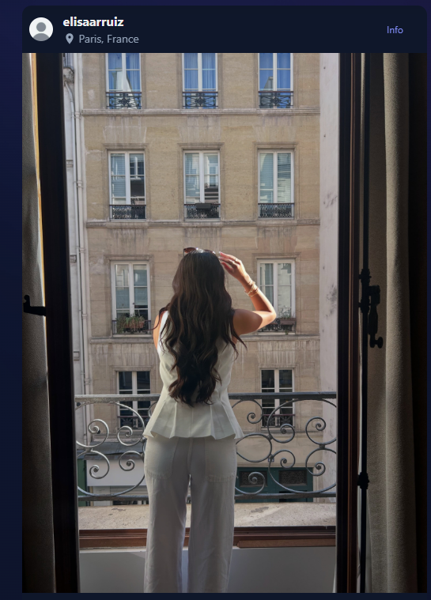
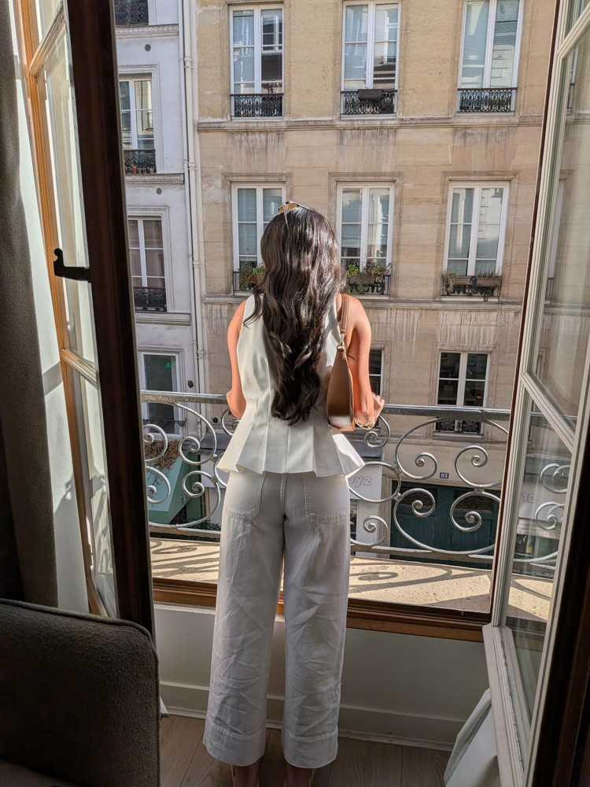
Same book and bookstore, but book angle, hands and framing differ. P-09 to P-14 are supporting alternate frames; the exact posted frame was not located.

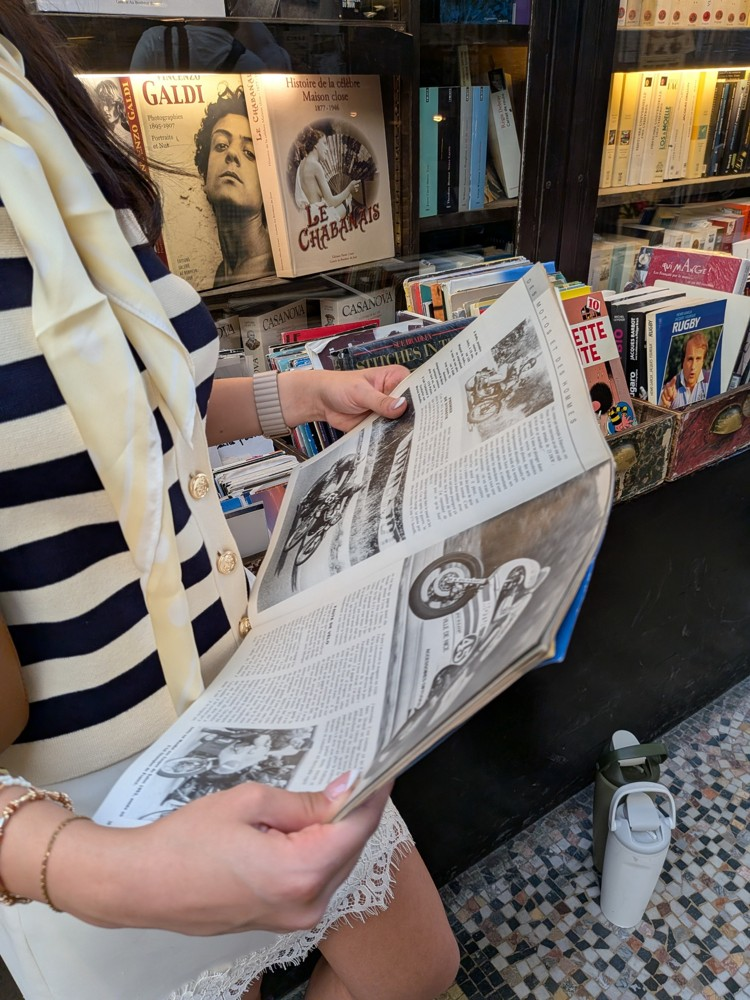
All previously supplied sources remain included. Alternate frames are supporting evidence, not automatically additional posted slides. An unpaired source has not been independently located in the supplied screenshots.
| ID | Source filename | Subject | Screenshot relationship |
|---|---|---|---|
| P-01 | PXL_20260813_112618548.PORTRAIT.jpg | Louvre pyramid portrait: red beret, navy blouse, white shorts | 120305: Visual match |
| P-02 | PXL_20260813_162323091.MP.jpg | Paris balcony portrait | 120411: Alternate frame only |
| P-03 | PXL_20260813_162330201.PORTRAIT.jpg | Paris balcony portrait | Supporting source; no exact match established in this screenshot set |
| P-04 | PXL_20260813_162332809.PORTRAIT.jpg | Paris balcony portrait | Supporting source; no exact match established in this screenshot set |
| P-05 | PXL_20260813_174908565.jpg | Paris bicycle street scene | 120441: Visual match |
| P-06 | PXL_20260813_174913565.MP.jpg | Paris bicycle street scene | Supporting source; no exact match established in this screenshot set |
| P-07 | PXL_20260813_181502716.MP.jpg | Paris ice-cream scene | Matches ice-cream highlight screenshot 120149; not established in supplied Louvre carousel screenshots |
| P-08 | PXL_20260813_181521460.jpg | Paris ice-cream scene | Supporting source; no exact match established in this screenshot set |
| P-09 | PXL_20260814_095236226.jpg | Paris bookstore: browsing an illustrated book | Supporting source; no exact match established in this screenshot set |
| P-10 | PXL_20260814_095240973.jpg | Paris bookstore: browsing an illustrated book | Supporting source; no exact match established in this screenshot set |
| P-11 | PXL_20260814_095329349.MP.jpg | Paris bookstore: browsing an illustrated book | 120427: Alternate frame only |
| P-12 | PXL_20260814_095332212.jpg | Paris bookstore: browsing an illustrated book | Supporting source; no exact match established in this screenshot set |
| P-13 | PXL_20260814_095400680.jpg | Paris bookstore: browsing an illustrated book | Supporting source; no exact match established in this screenshot set |
| P-14 | PXL_20260814_095403694.jpg | Paris bookstore: browsing an illustrated book | Supporting source; no exact match established in this screenshot set |
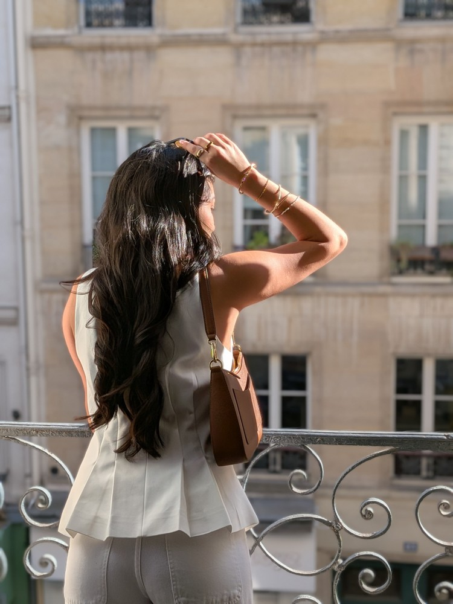
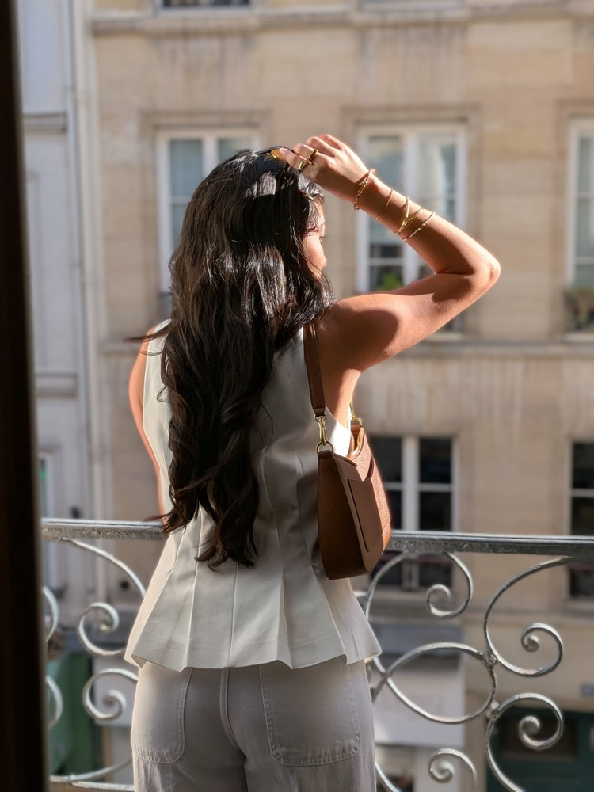
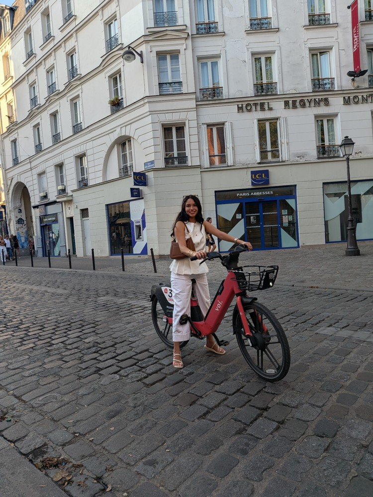

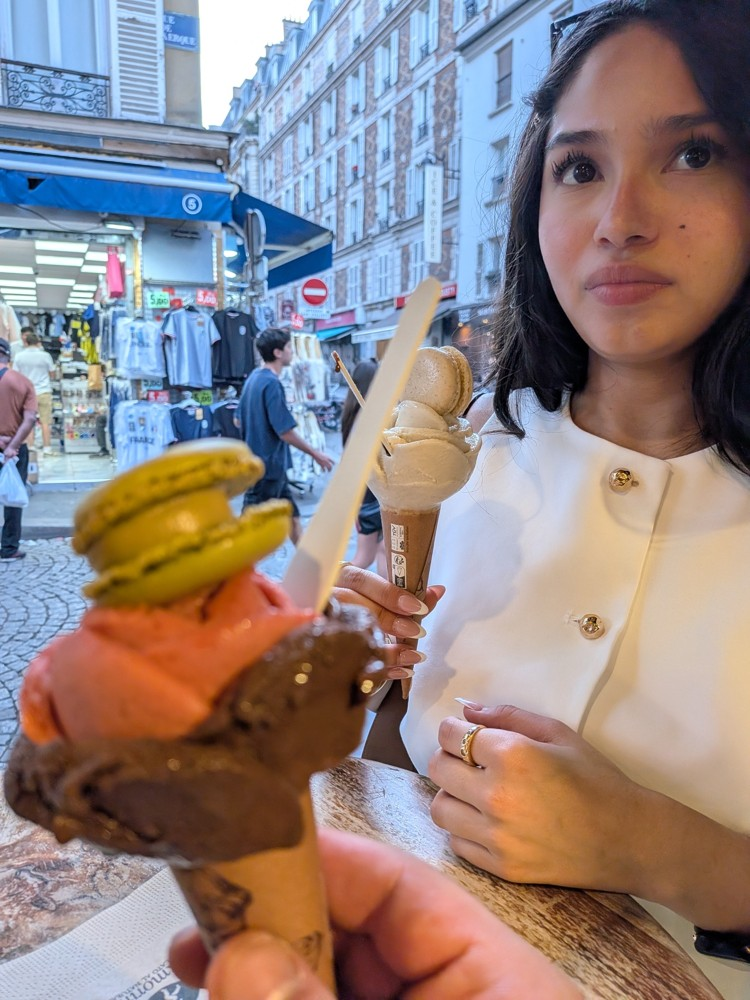
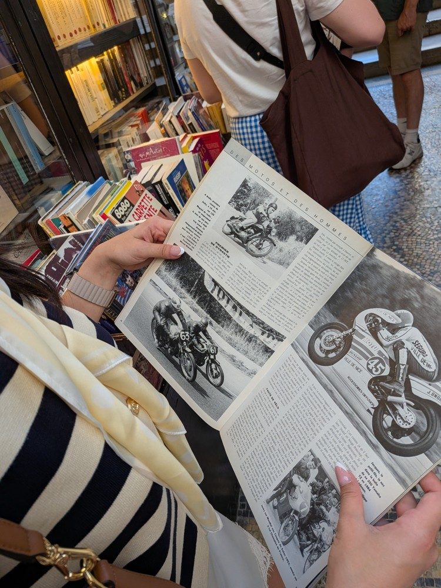
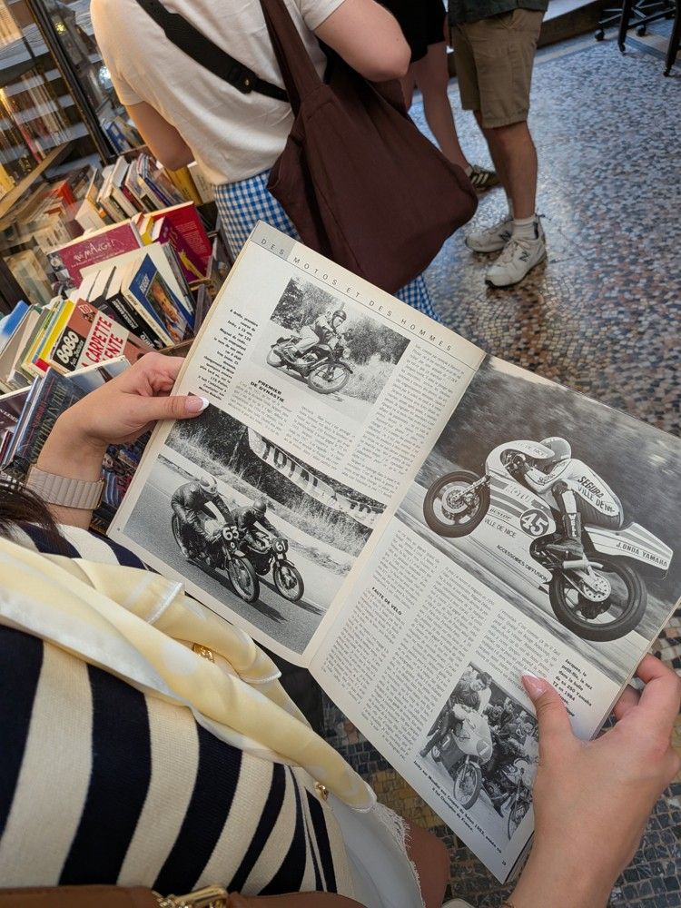
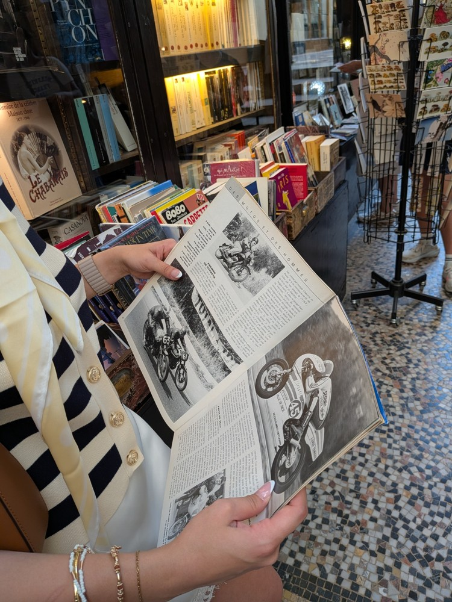
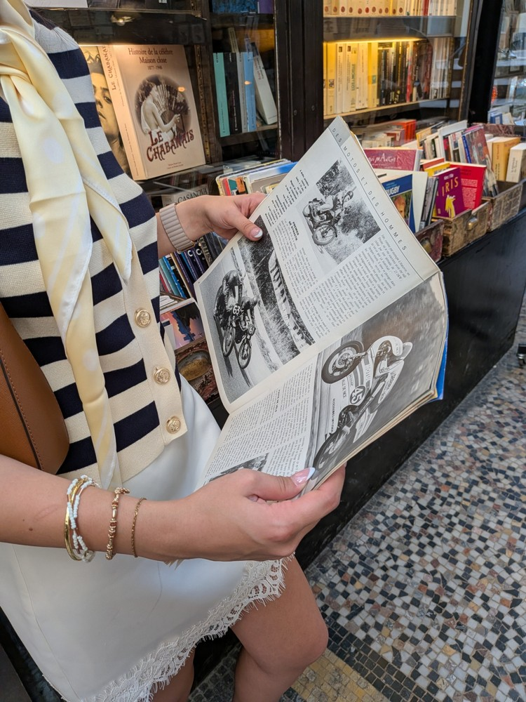
Related reports: 1056378363907479 and 2649127802224453. This page supplements evidence; it does not change previously submitted form text.